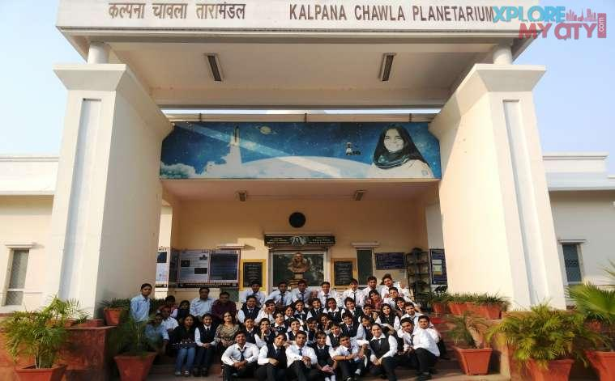

KALPANA CHAWLA
Kalpana Chawla(1962-2003) was an Indian-born American astronaut and aerospace engineer who was the first woman of Indian origin to fly to space. She first flew on Space Shuttle Columbia in 1997 as a mission specialist and primary robotic arm operator. Chawla's second flight was on STS-107, the final flight of Columbia, in 2003.
BIOGRAPHY
Dr. Kalpana Chawla was an extraordinary woman who made history as the first Indian-born woman to venture into space. She was born on March 17, 1962, in Karnal, Haryana, India. From a young age, Chawla demonstrated a deep passion for flying and the pursuit of knowledge She completed her early education in India before moving to the United States to pursue higher studies. Chawla obtained a Master's degree in Aerospace Engineering from the University of Texas at Arlington and later earned a second Master's degree in the same field from the University of Colorado Boulder. She went on to complete a Ph.D. in Aerospace Engineering as well. Her academic achievements and dedication to her field laid the foundation for her remarkable career in space exploration.In 1993, Kalpana Chawla joined NASA as a research scientist and became a naturalized U.S. citizen. Her expertise and exceptional skills led her to be selected as an astronaut candidate by NASA in 1995. Chawla underwent rigorous training and preparation, ultimately fulfilling her dream of venturing into space.Tragically, on February 1, 2003, Chawla's second mission on the space shuttle Columbia ended in disaster. Kalpana Chawla's untimely demise sent shockwaves throughout the world and left an indelible mark on the space exploration community.
CAREER
Kalpana Chawla's first space mission was on November 19, 1997, aboard the Space Shuttle Columbia, making her the first Indian woman in space. She traveled 10.67 million km and logged over 376 hours in space. She deployed the Spartan Satellite during the mission.
In 2000, Kalpana Chawla was selected for the STS-107 mission, which faced numerous delays. On January 16, 2003, she joined the crew aboard the Space Shuttle Columbia. Tragically, during re-entry on February 1, 2003, the shuttle disintegrated, resulting in the loss of Chawla and the entire crew. Chawla's remains were cremated and scattered at Zion National Park, Utah, as per her wishes. The Columbia disaster led to a suspension of shuttle flights and impacted the construction of the International Space Station.
Kalpana Chawla has been honored and recognized in various ways:
|
 |
Despite her short life, Kalpana Chawla's achievements and legacy continue to inspire generations of aspiring scientists and astronauts. Her dedication, courage, and pursuit of knowledge embody the spirit of exploration and the human quest to unravel the mysteries of the universe. Kalpana Chawla will forever be remembered as a trailblazer & a symbol of perseverance in the face of challenges.Kalpana Chawla's inspiring life story, passion for space exploration, her groundbreaking achievements continue to inspire and motivate individuals to reach for the stars, follow their dreams, and make a positive impact in their chosen fields.